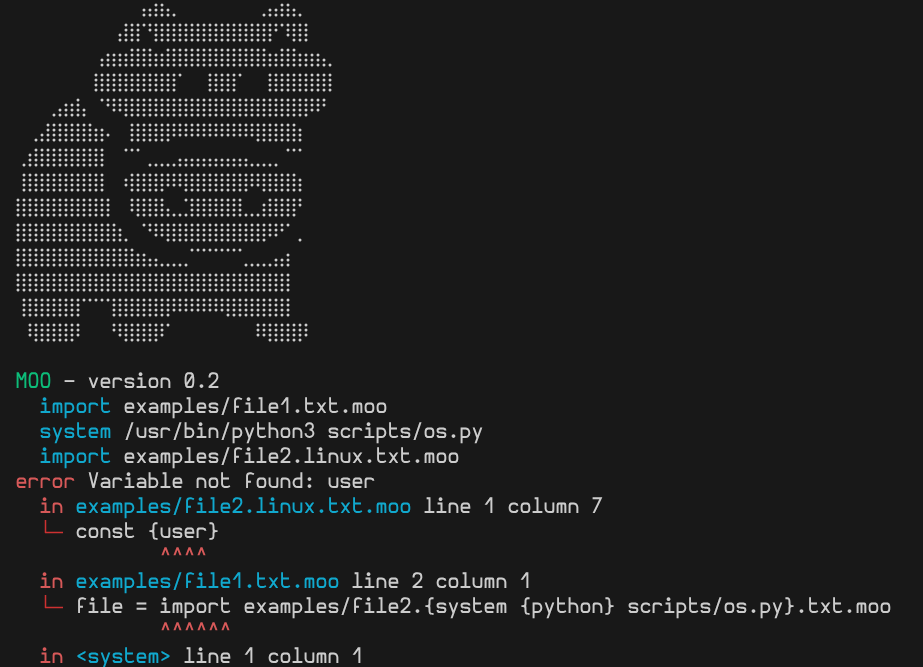

No configuration files! Only your code and the MOO‑NOLITH.
⚡ About
This is a build system that inlines external configuration and files. It aims
to reconcile its creator's three contradictory truths of software development:
- Monoliths are lightweight.
- Separation of concern is good.
- Splitting configuration from code is tedious.
📋 What's new?
MOO – version 0.4 (26 March 2026)- First stable version (changelog starts tracking from hereon)
🚀 Quickstart
- Download
moo.py - Optionally grab the
scripts/folder – it contains handy helpers. - Make sure you have Python 3.11 or later installed.
- Run a sample file:
python3 moo.py examples/hello.txt.moo
// hello.txt.moo
Hi!
/**/ moo.safe += const {moo.python} scripts/
/**/ os = system {moo.python} scripts/os.py
/**/ user = const maniospas
/**/ import hello.{os}.txt.moo
- Be safe out there.
// hid-hello.linux.txt.moo
Hello /*** const {user} ***/ from a linux file!
Running the above on a Linux OS creates examples/hello.txt (the .moo suffix is stripped):
Hi!
Hello world from a linux file!
- Be safe out there.
📚 Docs
Variables are immutable once created. They are inherited across imports, but can be shadowed locally. Variable names may contain dots (.) to create a hierarchy.
moo.args– extra arguments passed tomoo.pymoo.cwd– directory from whichmoo.pywas invokedmoo.python– absolute path to the running Python interpretermoo.safe– alistof whitelisted command prefixes (see Safety)moo.symbol.line– newline character (\n)moo.symbol.space– space character (moo.symbol.comma– comma character (,)
Expressions. MOO instructions can be used within other material so as to generate code and perform various tasks.
To make the instructions distinct, they reside in lines starting with /**/. The general syntax is:
/**/ [namespace:] NAME [operator] [operand] [command expression]
Available operators are = for assigning a value to a name (creates a new local variable),
and += for appending a value to an existing list.
Executed instructions are replaced with their textual result, where operators yield empty text.
Use /*** code ***/ for multi-line blocks or inline replacement. Expressions following commands
are interpreted as string literals whose {code} segments are also evaluated
as expressions.
| Command | Explanation | Syntax |
|---|---|---|
const |
Treat the expression as a constant string. | const expression |
system |
Run a system command lazily (cached, parallel). Returns the command's stdout as a string. | var = system {command} |
import |
Inline another .moo file. The imported file inherits the caller's variables and may shadow them. |
import filepath |
do |
Expand a previously captured const (or any expression) and then evaluate the result as normal moo code. |
do block |
eval |
Evaluate a Python expression at the moment of execution. Returns the expression's repr as a string. |
var = eval expression |
hide |
Force evaluation of a lazy variable (or any expression) and discard the result. Useful for synchronising parallel system calls. |
hide expression |
schedule |
Queue a system command to be executed *after* the final monolith file has been written. Commands run concurrently. | schedule command |
list |
Create a new empty list. Optional second argument defines the separator (default: empty string). | list separator |
placeholder |
Place a list here but only after gathering more contents (normally at the end of the file or right before a do expansion). Allows the list to gather more elements before it is turned into a string. |
placeholder LIST_NAME |
enabled |
Whether to keep enabled the current namespace for the rest of the file. Once disabled, it cannot be re-enabled. | NAMESPACE: enabled True/False |
path |
Convert a path to absolute path. | path: relative_path |
Lists hold an ordered collection of string segments. When a list is interpolated (e.g. via /***LIST***/)
its elements are joined using a separator declared upon list creation. Placeholders often allow using lists before all their
elements have been determined.
/**/ HEAD = list {moo.symbols.line}
/**/ BODY = list {moo.symbols.line}
<head>/*** {placeholder HEAD} ***/</head>
<body>/*** {placeholder BODY} ***/</body>
/**/ HEAD += const <title>My page</title>
/**/ BODY += Hello world!
Safety
Only commands whose **prefix** matches an entry in moo.safe may be executed. This whitelist is hierarchical: a child file may only add entries that are a **subset** of the caller’s whitelist.
Typical whitelisting for scripts shipped with the project:
/**/ moo.safe += {moo.python} scripts/
When a command is attempted, moo checks that the command string starts with one of the safe prefixes. If it does not, the build aborts with a clear error message.
Additional safety notes:
- Relative “..” segments are rejected in whitelisted prefixes to avoid directory‑escape attacks. Convert to absolute paths when necessary.
- The built‑in
evalis **unsafe** and should be avoided in production code; it executes arbitrary Python. - Appending to
moo.safefrom a child file is only accepted if the caller already permits a superset of the requested prefixes.
Scripts
The repository ships a handful of ready‑made helpers that can be called via the {moo.python} variable:
scripts/os.py– prints the host operating system (Linux, Windows, macOS).scripts/b64.py– reads a file given as the first argument and prints its Base64 representation.
You can add more scripts to the scripts/ directory; as long as the directory is whitelisted, they can be invoked with system {moo.python} scripts/your_script.py.
Reusable helpers
Define a helper once (often as a const that captures a command) and reuse it anywhere you import the file. The helper inherits the current whitelist.
/**/ moo.safe += {moo.python} scripts/
/**/ b64 = const system {moo.python} scripts/b64.py
/**/ b64 # prints the command that will be run (for debugging)
/**/ do {b64} examples/file1.txt.moo # actually runs the b64 conversion
Namespaces let you group related statements and optionally disable the whole group at runtime.
In particular, if the enabled condition evaluates to False, all statements in that namespace
are ignored for the rest of the file. A disabled namespace cannot be re‑enabled later.
// src/main.c.moo
///**/ COMPILE: moo.safe += gcc
///**/ COMPILE: enabled {eval "--compile" in {moo.args}}
///**/ COMPILE: schedule gcc -Wall -O3 -o lettuce src/main.c
#include <stdio.h>
int main() {
printf("Hello world!\n");
return 0;
}
Command‑line interface
Run the interpreter from a terminal:
python3 moo.py [options] file.moo
Options:
--stream Stream the output to the console.
--nocolor Do not colorize results with ANSI.
All extra arguments are stored in moo.args and can be inspected with eval or in a condition.
Errors. If something fails, moo aborts and prints a stack trace that points to the start of the offending /**/ block, including line/column numbers inside nested {} expressions. System‑command failures are also reported with the original command line.
Example error screenshot:
